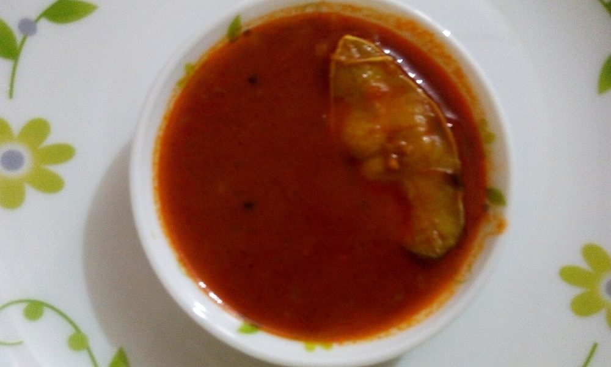

Chettinad Meen Varuval
fish fried crisp under a red pepper-and-fennel paste, ready in half an hour

Contains: fish
Ingredients
Quantities for 4.
- 600g, 4 thick steaks or fillets Fishseer, pomfret or kingfish
- 4 tbsp, for shallow frying Sesame Oilgingelly oil
- 2 tsp Kashmiri Chillifor colour without punishing heat
- 1 tsp Chilli Powder
- 1.5 tsp, freshly crushed Black Pepper
- 1 tsp Fennel Powder
- 1 tsp Coriander Powder
- 1/2 tsp Turmeric
- 1 inch, ground to paste Ginger
- 6 cloves, ground to paste Garlic
- 2 tbsp Rice Flourthe crust; do not skip it
- 1 tsp thick pulp Tamarindkeeps the fish from smelling muddy
- 2 sprigs Curry Leaves
- 1, cut into wedges Lemonoptional
- to taste Salt
Cookware
stovetop, tawa
Before you start
- Score the fish twice on each side, about 1cm deep, so the masala reaches the middle.
- Marinate 30 minutes at room temperature — longer than an hour and the tamarind and salt start to cure the flesh soft.
- Get the fish properly dry before it hits the pan. Wet fish steams and the crust slides off.
Method
- Mix the kashmiri chilli, chilli powder, pepper, fennel, coriander, turmeric, ginger-garlic paste, tamarind pulp and salt into a thick paste with 1 tbsp water.
- Rub the paste into the scored fish, working it into the cuts. Rest 30 minutes.
- Just before frying, dust the rice flour over both sides and press it on lightly.Add rice flour at the last minute. Left to sit, it goes pasty instead of crisp.
- Heat the gingelly oil on a tawa over medium-high until a crumb of masala sizzles immediately.
- Lay the fish down and do not touch it for 4 minutes. The edges should go opaque and the underside deep rust-red.Moving the fish early tears the crust. Wait for it to release on its own.
- Turn once and fry the second side 3-4 minutes.
- Throw the curry leaves into the hot oil at the side of the pan for the last 20 seconds, until they crackle.
- Drain briefly, top with the fried leaves and serve hot with lemon wedges.
Storage
Eat straight away — fried fish loses its crust within the hour. Leftovers keep 1 day refrigerated; crisp them up in a dry pan, never a microwave.
Nutrition Good estimate
| Per serving195 g | Per 100 g | |
|---|---|---|
| Calories | 346+ kcal | 177+ kcal |
| Protein | 32.1+ g | 16.5+ g |
| Carbohydrate | 12.0+ g | 6.1+ g |
| of which sugars | 0.9+ g | 0.4+ g |
| Fibre | 2.4+ g | 1.2+ g |
| Fat | 18.8+ g | 9.6+ g |
| of which saturated | 2.8+ g | 1.4+ g |
| of which unsaturated | 14.6+ g | 7.5+ g |
The + means ingredients given to taste rather than by weight are counted as zero, so the true figure is a little higher than shown. Worked out from the listed quantities; most of the ingredient list could be weighed. Ingredients given to taste rather than by weight are counted as zero, so the real figure is a little higher than this. The + says so. Some ingredients have no exact match in the nutrient database and use the nearest equivalent: curry leaves. Estimated from raw ingredients using USDA FoodData Central. Cooking changes are not modelled, and added salt is excluded, so sodium is not given.
Recipe v1.0.0, last updated 2026-07-31. Curated for Khaana and kept under version control.